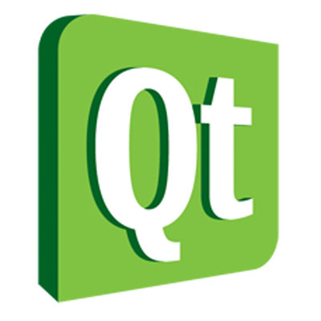

【Qt 自由軟體開發與智慧型手機應用研討會】即日起開放報名！
建立日期 2011-05-04 10:52 最近更新在 2011-06-14 13:26
作者是 洪華超
Qt 是一個功能豐富的程式開發套件，被廣泛運用於 GUI 程式的開發，並以傑出的互動介面受到各方的讚譽，除此之外、Qt 可以協助程式設計師在跨平台的作業系統與機器上實作他們的構想和創意。本次的 Qt 程式開發研討會，自由軟體鑄造場邀請到暨南大學資工系、NOKIA Taiwan，以及 MOVIAL Taiwan 一起合作舉辦，活動內容針對 Qt 的程式開發作深入淺出的介紹，讓國內對於 Qt 程式開發有興趣的朋友，可以透過專職講師一日的精萃解說，便得以初探使用 Qt、以及採用 Qt 進行程式開發方面的實作技巧。活動即日起開放報名，與會者得以全程免費參與，名額有限、請有興趣的朋友儘早完成報名以免向隅！
◎ 活動時間：2011 年 5 月 27 日（五） 9:00 ~ 17:30
◎ 活動地點：中央研究院資訊科學研究所 106 會議室 (
https://www.iis.sinica.edu.tw/page/aboutus/Location.html?lang=zh)
◎ 主辦單位：
中研院-
資創中心-
自由軟體鑄造場 (Open Source Software Foundry, OSSF)
◎ 協辦單位：
國立暨南國際大學資訊工程系、
NOKIA Taiwan、
MOVIAL Taiwan◎ 活動網頁：
https://www.openfoundry.org/tw/workshop/details/146